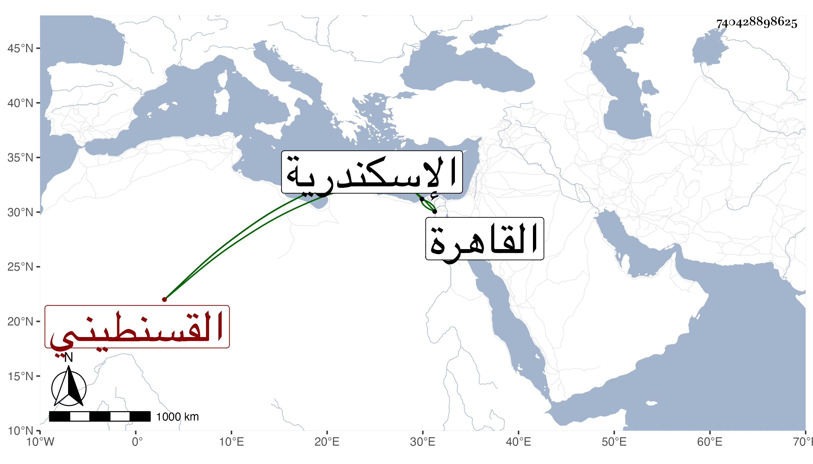

0902Sakhawi.DawLamic.ITO20230111-ara1.EIS1600.740428898625
Biography ID: 740428898625
909
سالم بن عبد الله بن سعادة بن طاحين القسنطيني نزيل اسكندرية . كان أسود اللون جدا حتى كان يظن أنه مولى وأما هو فكان يدعى أنه أنصاري وكان للناس فيه اعتقاد وبين عينيه سجادة ، وقد لازم البرهان بن جماعة واختص به وصار له صيت وطار له صوت ، ثم صحب الجمال محمود بن علي الاستادار ، وتردد كثيرا إلى القاهرة كل ذلك مع محاضرة حسنة وله أناشيد وحكايات وعلى ذهنه فنون . مات باسكندرية في سنة عشرين وقد جاز الثمانين . قاله شيخنا في إنبائه وهو في عقود المقريزي مطول وأنه صحبه وتردد إليه مرارا وأنه أنشده وكأنه متمثلا :
| ومن يعترض والعلم عنه بمعزل | يرى النقص في عين الكمال ولا يدري |
وهو أول بيتين لأبي العباس أحمد بن محمد بن أحمد البكري الشريشي وثانيهما :
| ومن لم يكن يدري العروض فربما | يرى القبض في بحر الطويل من الكسر |
